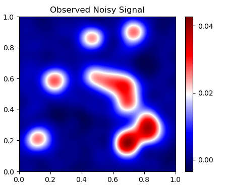
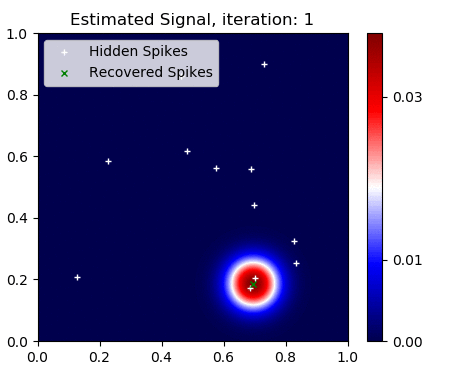

Check my GitHub page.
Check my GitHub page.
The SFW algorithm is a greedy type algorithm based on the Frank-Wolfe algorithm (or Conditionnal Gradient Method (CGM)) that solves the BLASSO over the space of Radon measures. It adds a new Dirac mass (or spike) at each iteration and consists in interleaving a convex and a non convex step where both the amplitudes and positions of the spikes are moved to further decrease the objective function. We proved in [1] that it converges to the unique sparse solution of the BLASSO (finite sum of spikes) in finite time.
 This algorithm is currently being implemented in Java by Amandine Evard (EPFL) as part of a master project. The goal is to developp an ImageJ Plugin that can be used by biologists for Single Molecule Localization Microscopy (SMLM) applications. You can find more details on this website.